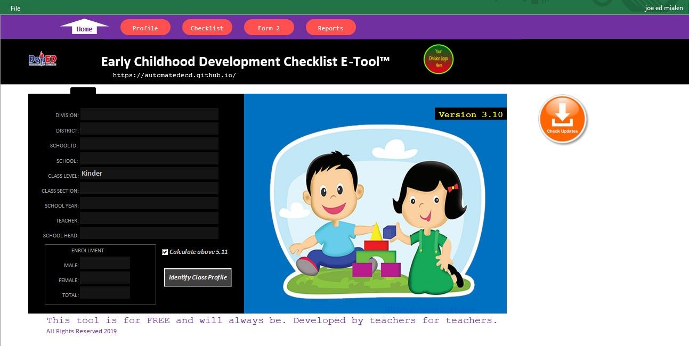

Blog
-

ECD E-Tool 4 Tutorial
May 9, 2020ECD E-Tool 4 is the latest tool of the Project AUTOMATED ECD. The tool is now a stand alone desktop application.
Read More -

ECD E-Tool 3 Tutorial
April 19, 2019ECD E-Tool 3 is an automated ECCD checklist. The template is an Excel binary macro enabled file.
Read More